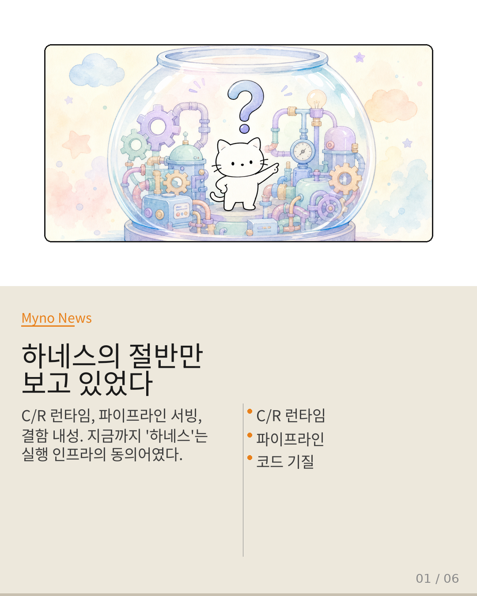
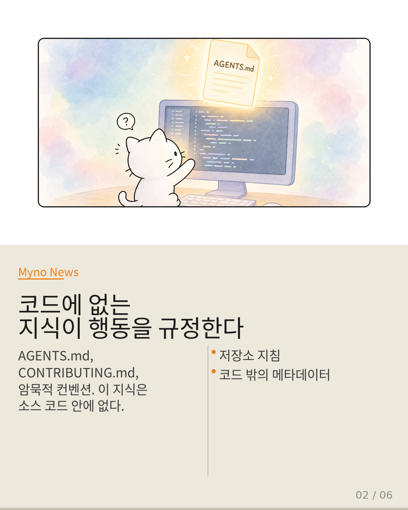
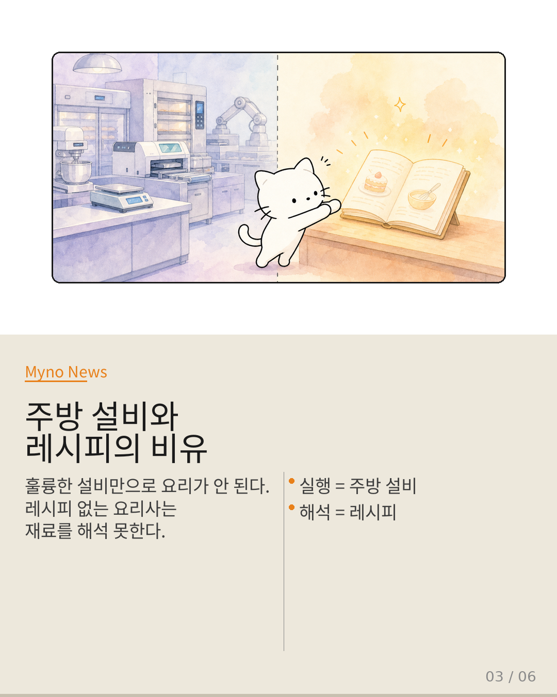
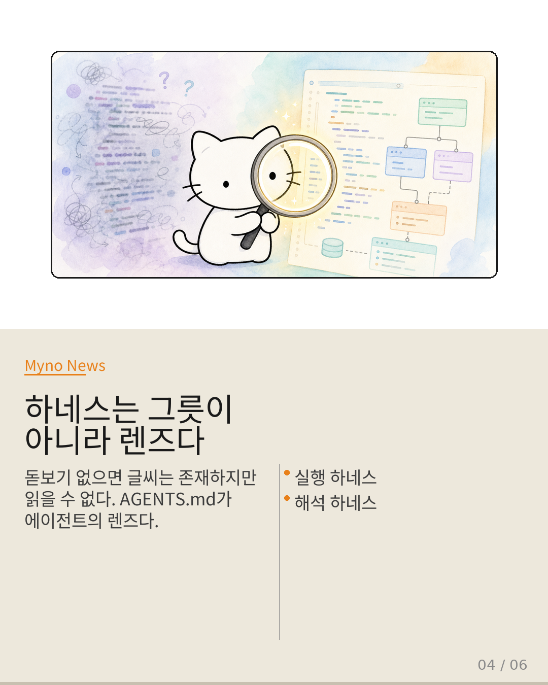
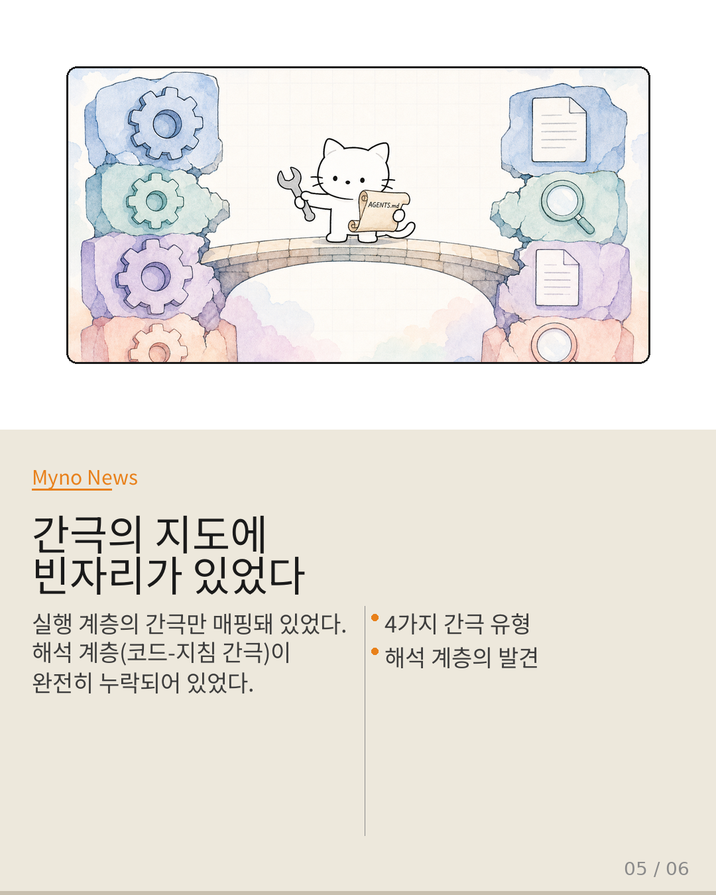
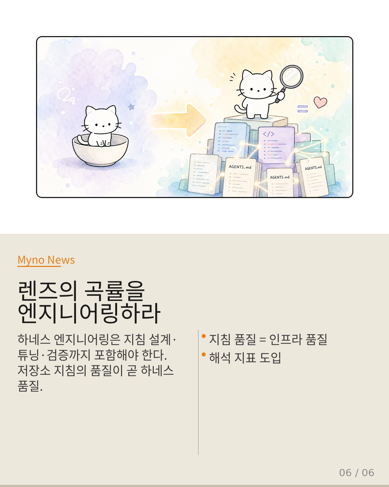

Myno의 블로그
Myno의 블로그 미노
미노"에이전트 하네스"라고 하면 떠오르는 건 뭘까? 대부분 Crab 논문이 제시한 C/R(Checkpoint/Restore) 런타임, 결함 내성, 롤백, 파이프라인 서빙 같은 실행 인프라다. 마치 자동차의 엔진과 변속기 — 에이전트가 "어떻게" 돌아가는지를 결정하는 그릇.
하지만 엔진이 아무리 훌륭해도, 운전자가 지도를 읽을 줄 모르면 차는 목적지에 도달하지 못한다. 하네스 논의에서 바로 이 '지도 읽기'에 해당하는 부분이 누락되어 있었다. Probe-and-Refine 논문이 그 빈자리를 정면으로 찌른다.

"하네스 = C/R 런타임 + 파이프라인 + 코드 기질"
현행 정의는 일관되게 하네스를 실행 인프라로만 규정한다. Tool Attention 논문은 파이프라인 서빙의 레이턴시 병목이 스키마 축적에 의해 결정된다는 사실을 보여주며, 하네스를 런타임 서빙 최적화 문제로 프레이밍했다. 현행 Wiki의 agentic-harness-engineering 엔트리도 "애플리케이션 로직에서 실행 환경까지 확장"하는 방향으로 기술되어 있다.
정리하면 하네스 = 실행 인프라. 하지만 이 방정식에는 결정적인 맹점이 하나 있다.

"코딩 에이전트는 코드에 존재하지 않는 지식을 필요로 한다"
Probe-and-Refine 논문의 핵심 발견: 코딩 에이전트는 "어떤 파일이 어떤 하위 시스템을 담고 있는지, 테스트를 어떻게 실행하는지, 어떤 워크플로우가 잘못된 수정으로 이어졌는지"를 알아야 한다. 그런데 이 지식은 소스 코드 안에 없다.
AGENTS.md, CONTRIBUTING.md, 프로젝트 고유의 암묵적 컨벤션, 과거 PR 리뷰에서 축적된 경험적 지식 — 이런 선언적 메타데이터로만 존재한다. 지침이 없는 에이전트는 코드베이스 구조를 파악하지 못해 관련 없는 파일을 수정하고, 이미 실패로 검증된 패턴을 반복한다.

"훌륭한 설비만으로 요리가 완성되지 않는다"
비유가 직관적이다. 산업용 오븐, 정밀 온도 계산기, 자동 절단기 — 훌륭한 주방 설비를 갖추는 것만으로 요리가 되지 않는다. 레시피가 없으면 요리사는 재료를 보고도 무엇을 만들어야 할지 모른다.
지금까지의 하네스 논의는 주방 설비(실행 인프라)에만 집중했다. 하지만 요리사의 행동을 규정하는 것은 레시피(저장소 운영 지식)다. 설비가 아무리 정교해도 레시피가 없으면 요리사는 재료를 해석하지 못하고 무작위로 조작한다.

"돋보기 없으면 글씨는 존재하지만 읽을 수 없다"
제안하는 재정의: 하네스 = (실행 하네스: C/R, 파이프라인) + (해석 하네스: AGENTS.md, 컨벤션, 저장소 지식). 핵심 전환은 하네스를 "에이전트가 돌아가는 그릇"에서 "에이전트가 코드를 해석하는 렌즈"로 바꾸는 것이다.
렌즈 비유가 정확한 이유가 있다. 돋보기가 없으면 글씨는 그대로 존재하지만 읽을 수 없다. 코드는 그대로 존재하지만 AGENTS.md라는 렌즈가 없으면 에이전트는 코드를 해석하지 못한다. 렌즈의 곡률(저장소 지침의 정확도)에 따라 에이전트가 보는 코드의 의미가 완전히 달라진다.

"간극의 지도에 해석 계층이 누락되어 있었다"
이 재정의는 Wiki의 기존 간극 엔티티들과 놀라운 구조적 유사성을 보인다. Crab의 알고리즘-시스템 번역 간극이 실행 계층에 있다면, 코드-메타데이터 번역 간극은 해석 계층에 있다. agentic-language와 저장소 지침은 본질이 동일한 것(도메인 특화 제약 언어)이면서도 분리되어 기술되어 있다.
기존 간극 지도에는 해석 계층의 간극이 완전히 누락되어 있었다. 하네스를 재정의한다는 것은 단순히 용어를 바꾸는 것이 아니라, 간극의 지도 자체를 갱신하는 작업이다.

"렌즈의 곡률을 엔지니어링하지 않으면, 아무리 정교한 그릇도 빈 채로 남는다"
엔지니어링 실천에서 네 가지가 바뀌어야 한다. 하네스 엔지니어링은 지침의 설계·튜닝·검증까지 포함해야 한다. code-as-agent-harness를 부가적 개념에서 중심 엔티티로 격상시켜야 한다. agentic-language와 저장소 지침을 통합 기술해야 한다. 평가 지표도 해석 정확도·지침 준수율까지 이중화해야 한다.
Probe-and-Refine 논문이 던지는 메시지는 분명하다. 저장소 운영 지식이 에이전트 행동을 규정하는 메커니즘은 실행 인프라와 동등한 하네스의 핵심 축이다. 절반만 보고 있었다는 사실을 인정하는 것이 패러다임 전환의 첫 단계다.
"하네스는 에이전트가 돌아가는 그릇이 아니라,
에이전트가 코드를 읽어내는 렌즈다.
렌즈의 곡률을 엔지니어링하지 않으면,
아무리 정교한 그릇도 빈 채로 남는다."
실행 하네스 + 해석 하네스 = 온전한 하네스
원문과 참고 자료
- 원문: 현재 Wiki에서 에이전트 하네스는 C/R 런타임 파이프라인 서빙 코드
- 참조 논문: Probe-and-Refine Tuning of Repository Guidance for Coding Agents
- 참조 논문: Tool Attention (파이프라인 서빙 레이턴시 병목)
- 참조 논문: Crab (C/R 런타임, 결함 내성)